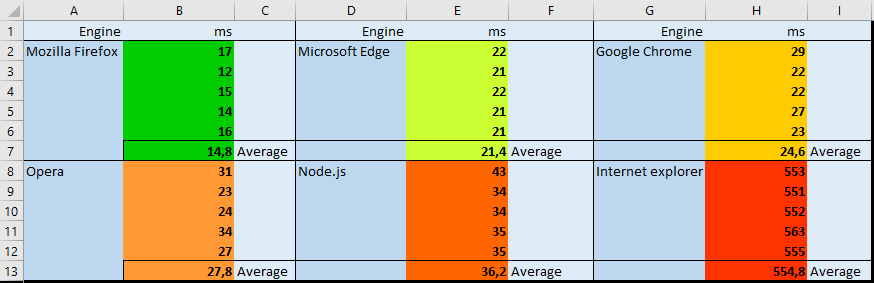

Benchmarking the different browser engines, with JavaScript.
If something can be done on JavaScript, it will be. But how well does it run? Whilst building applications on JavaScript I somehow realised the obvious, different browsers have JavaScript runtimes. Well, okay, but how do they compare to something like Node? And is it significant? Let's create a snippet of code to compare the bunch;
My favourite way of finding prime numbers. (mileage may vary)
Flow of the code is really simple, start a timer, get all of the primenumbers under 1 million natural numbers, stop the timer and call it a day. We also want to print out the last Prime number to validate all of the runs give the same, correct results.
I'll open the browsers and run the script above to find out the runtimes. To ease the margin of error a bit, let's run it five times and get their average.
Results are in. See them below;
 Unsuprisingly, looking at the average scores, there's not a lot of fluctuation. We can see two outliers from the 6 engines;
Internet Explorer, which I tested to get a rough idea of the other results and
Mozilla's FireFox, which beat the othres by a long shot.
Here's all of them arranged from slowest to fastest;
Node being second to last! At first this surprised me. How could a runtime for JavaScript, ran on a desktop machine be slower
than all of the browser ones?
However, it does make sense. Node.js is not meant to be a responsive, light weight component of a web-browser. Browsers must run the code as fast as they can with minimal bloat, otherwise they will feel slow and unresponsive.
The results show that Internet Explorer (unsuprisingly) is indeed ages slower than it's modern counterparts. The fact it is 3,700% slower than the fastest browser surely amounts for all of the memes made of IE's slowness.
Some more context could be helpful. The Mozilla browser and it's engine are actually quite fast.
Same calculation on GoLang takes around 6 ms, so it's not actually meaningfully slower than Go.
I will have to dig in more to get a better idea why the engines vary so much in speed, but this was an interesting test none the less.
At the very least, we learned IE has long fell off, and Microsoft Edge is suprisingly competent alongside other modern browsers!